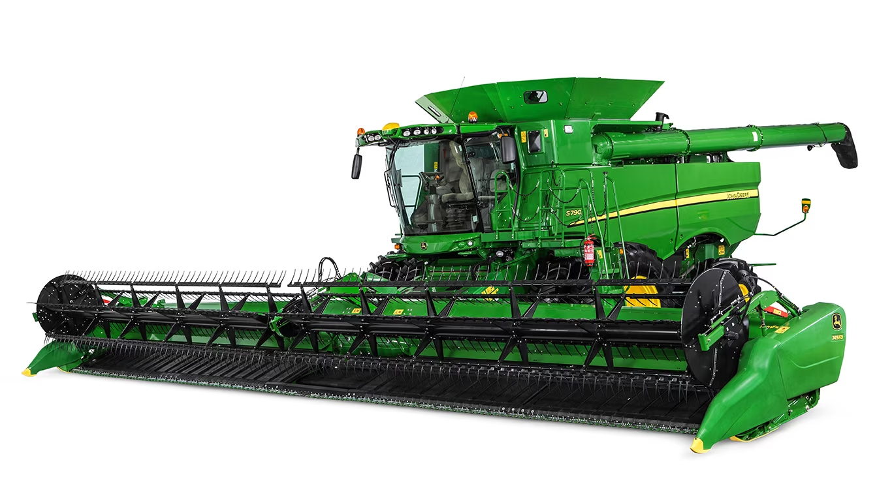

Colheitadeiras são máquinas agrícolas capazes de realizar a colheita (como o próprio nome diz), a debulha e limpeza dos grãos. Podem ser empregadas em colheitas de diversos tipos de cultura, incluindo: linhaça, milho, trigo, algodão, cana de açúcar e diferentes tipos de grãos. São equipamentos grandes e mais eficientes em plantações de grande e médio porte, onde podem ser usadas em seu máximo potencial para garantir aos agricultores uma exportação em saca competitiva com o mercado.
As primeiras máquinas similares às colheitadeiras eram chamadas de ceifeiras mecânicas, desenvolvidas para campos de milho e trigo. A primeira versão motorizada desses modelos foi inventada por Obed Hussey e patenteada em 1833. Contudo, sua invenção dependia de tração animal. Outro inventor a quem atribuem a criação da colheitadeira é Hiram Moore, que patenteou e desenvolveu um modelo que, em 1839, foi capaz de colher 20 ha. Seus equipamentos nessa época já separavam os produtos das colheitas. Na virada do século 20, surgiram os primeiros modelos com motores a diesel ou gás. Em 1965, o primeiro maquinário autopropelido a diesel surgiu no Rio Grande do Sul. O design rotativo foi outra inovação importante, capaz de separar os grãos da palha remanescente no processo de colheita usando ventiladores. Essa tecnologia foi desenvolvida pela empresa estadunidense já fechada International Harvester. Acompanhando o desenvolvimento tecnológico dos anos 70, surgiu a agricultura de precisão, com medidores de eficiência de debulha instalados nos equipamentos. Em 1979, ampliando ainda mais a variedade de colheitadeiras, foi inventado no Brasil um modelo adaptado para culturas de café, pelo japonês Shunji Nishimura em Pompeia, no estado de São Paulo.
Colheitadeiras são máquinas úteis para auxiliar no campo, e as adaptações para diferentes cultivos fizeram desses equipamentos peças importantes no avanço da agropecuária mundial.
